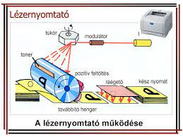

működése
A nyomtató egy fényérzékeny hengert tartalmaz, amelyet kezdetben pozitív elektromos töltéssel töltenek fel. A forgó hengerre a képet lézersugár rajzolja. Az érintett pontokban negatív töltés jön létre, amely magához vonzza a pozitív töltésű festékport. A kép átkerül a henger alatt áthaladó, és előzőleg pozitívra töltött papírra. Végül egy fűtőhenger a papírra égeti a festékszemcséket.
A legfontosabb alkatrészei: toner tartály, fotókonduktor, dobegység vagy fényhenger, továbbító henger, rögzítő henger, lézer egység, tükör.
előnyei
olcsó az üzemeltetése
pontosság és tartósság (a festék vízálló)
sebesség
csendes
nagy volumen egy adag tonerrel
„szárazan” érkezik ki a papír a nyomtatóból (nem maszatolódik el a festék)
a tonerpor nem szárad be a tartályba, mint a tintasugaras nyomtatónál a tintapatron
hátányai
drága beszerzési ár, ha színes nyomtatásra is szükség van
a toner kazetta drága, de sokáig elég
a kedvezőbb áru lézernyomtatók csak fekete-fehérben nyomtatnak
általában a lézernyomtatók nem tudnak fénymásolni, szkennelni és faxolni, így ezen funkciókat másik készüléknek kell ellátnia
több áramot fogyaszt, mint egy tintasugaras nyomtató
fajtái
Multifunkciós lézernyomtató:
A multifunkciós lézernyomtatók ellátják a fénymásoló és a szkenner feladatát, emellett helyet takarítanak meg és olcsóbbak, mind a specializált eszközök külön-külön történő megvásárlása. Színes és monokromatikus (fekete-fehér) változatok is léteznek. A multifunkciós lézernyomtató alkalmas az irodába, iskolába, vállalatokhoz, de a háztartásba is, ahol többször kerül sor nyomtatásra.
Fekete-fehér lézernyomtató:
A fekete-fehér lézernyomtató ideális választás nagyobb mennyiségű szöveges dokumentum nyomtatása esetén. A tonerkazetták, vagy színezőanyagok olcsóbbak, és a nyomtatás rendkívül gyorsan végbemegy.
Színes lézernyomtató:
A színes lézernyomtató abban az esetben lehet megfelelő, ha a fekete-fehér már nem elég - például színes, grafikonokkal, táblázatokkal, képekkel és egyéb grafikai anyaggal tűzdelt szöveges dokumentumok esetén.